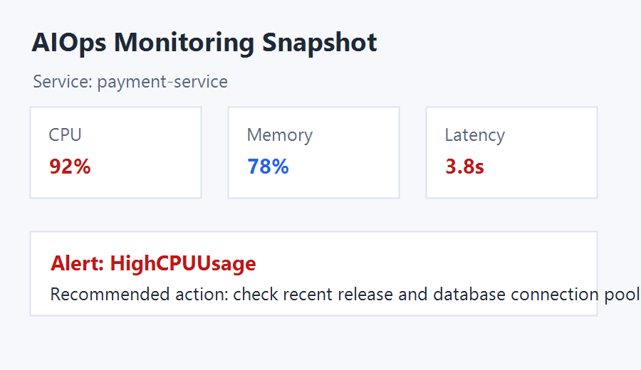

用例：文档上传并触发 RAG 检索
目标：验证上传文档会被写入知识库，并能被后续对话召回。
结论：这个结果证明“上传 -> 文档切分 -> 向量索引 -> 对话召回”的链路已经跑通。
实测时间：2026-06-22 22:09-22:25，环境：Windows + Docker + FastAPI + Milvus + 可配置大模型服务。
| 用例 | 接口/页面 | 输入 | 实测结果 | 状态 |
|---|---|---|---|---|
| Web 首页 | GET / |
浏览器打开首页 | 页面可访问，聊天 UI 正常加载 | 通过 |
| API 文档 | GET /docs |
Swagger UI | 返回 200 OK，可查看全部接口 | 通过 |
| 健康检查 | GET /health |
无 | 服务 healthy，Milvus status=connected | 通过 |
| 监控状态 | GET /api/monitoring/status |
无 | 返回 PID、uptime、CPU、内存、磁盘和线程数 | 通过 |
| Prometheus 指标 | GET /metrics |
无 | 返回 Prometheus 文本格式指标 | 通过 |
| 错误日志 | GET /api/monitoring/errors |
无 | 返回 0 条错误日志 | 通过 |
| 普通对话 | POST /api/chat |
“请用两句话说明这个系统的核心能力。” | 10.4s 返回模型回答，success=true | 通过 |
| 文档上传 | POST /api/upload |
interview_rag_demo.md |
0.9s 上传成功，size=616 bytes | 通过 |
| RAG 召回 | POST /api/chat |
询问上传文档里的验收暗号 | 返回 RAG-UPLOAD-PASS-2026 |
通过 |
| 多模态识别 | POST /api/chat_multimodal |
上传监控截图 PNG | 识别 payment-service、CPU 92%、HighCPUUsage | 通过 |
| AIOps 流式诊断 | POST /api/aiops |
session_id=demo-aiops-interview-long | 收到 status、plan、step_complete、report 事件，最终报告已生成 | 通过 |
目标：验证上传文档会被写入知识库，并能被后续对话召回。
目标：验证后端可以完成真实 LLM 调用，而不是只打开静态页面。

输入问题：请识别这张监控截图中的服务名、异常指标和建议处理方向。
| 输入 | {"session_id":"demo-aiops-interview-long","tenant_id":"demo","user_id":"interview"} |
|---|---|
| 事件类型 | status、plan、step_complete、report |
| Planner 结果 | 生成 6 个诊断步骤，包括查询 Prometheus 告警、解析告警、关联日志主题、查询日志和指标、生成报告。 |
| Executor/Replanner 结果 | 步骤执行后进入 replanner，replanner 判断继续执行剩余步骤，最终产生 final_report 事件。 |
| 最终报告摘要 | 检测到 SuperBizAgentHighMemory 和 SuperBizAgentHighDisk 两个 warning/pending 告警，并给出内存排查、磁盘清理、日志轮转和 Docker 清理等建议。 |